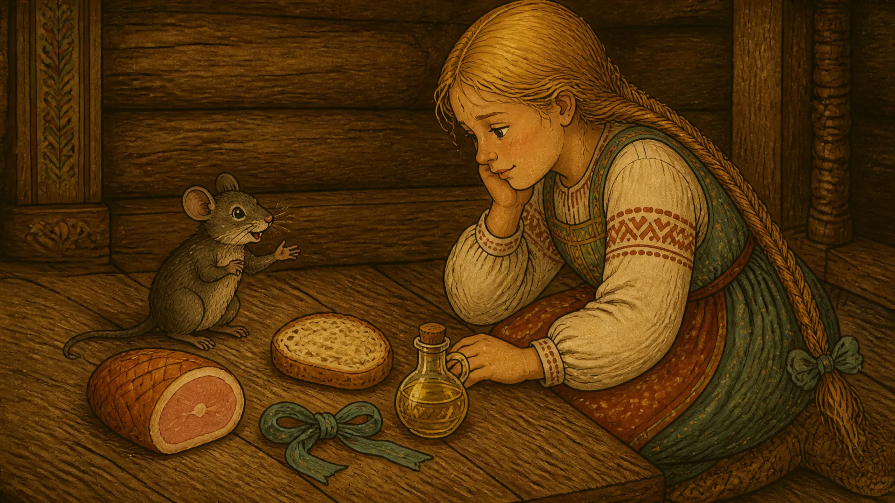
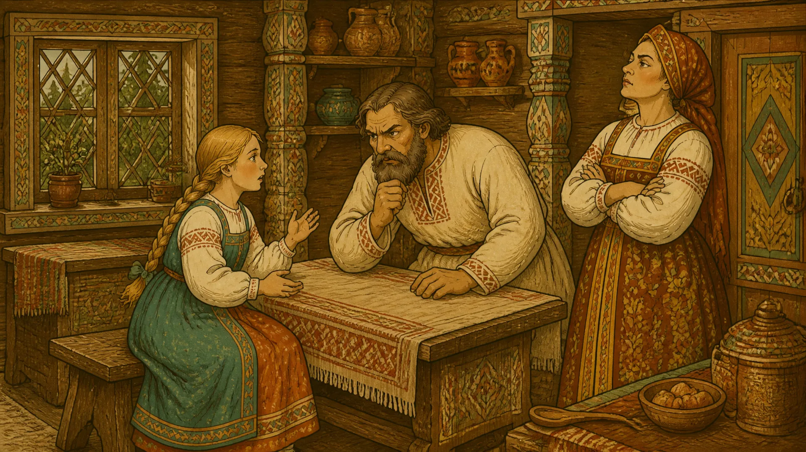

Жил мужик с дочкой. Первая жена у него умерла, и женился он на другой. Невзлюбила мачеха падчерицу: то работа ей не так сделана, то слово не вовремя сказано.
Однажды говорит она мужу:
— Вези девчонку к моей тётке. Пусть у неё послужит.
А тётка та была Баба-яга, костяная нога.
Повёз отец дочку в лес. Едут, едут — стоит избушка на курьих ножках, к лесу передом, к ним задом.
— Избушка, избушка, — сказал отец, — стань к лесу задом, ко мне передом.
Повернулась избушка. Вошли они, а там Баба-яга: нос в потолок врос, зубы на полке лежат, глаза угольями горят.
— Русским духом пахнет! — говорит Яга.
Отец поклонился:
— Привёз тебе девочку в услуженье.
Оставил он дочь и уехал. А Баба-яга дала ей пряжи целый короб:
— Пряди, печь топи, обед готовь. А не управишься — худо будет.
Села девочка и заплакала. Подбежала к ней мышка:
— Не плачь. Дай мне крошку хлеба, я тебе помогу.
Девочка дала мышке хлеба. Мышка сказала:
— Когда Яга уйдёт, беги.

Коту дай ветчинки, собаке — хлебца, берёзку перевяжи ленточкой, воротам подлей маслица. Все тебя пропустят.
Так девочка и сделала. Коту дала кусочек, собаке — хлеб, берёзку перевязала, ворота смазала. Потом пустилась бежать.
Кот сел за прялку и стал нитку тянуть. Возвращается Баба-яга:
— Девка, прядёшь?
— Пряду, бабушка, — отвечает кот тонким голосом.
Яга вошла, увидела кота и бросилась за девочкой.
— Кот, зачем выпустил?
— Я тебе столько лет служу, ты мне косточки не дала, а она меня ветчинкой угостила.
Яга к собаке:
— Зачем пропустила?
— Я тебе столько лет служу, ты мне корки не бросила, а она мне хлебца дала.
Яга к берёзке:
— Зачем ветвями не хлестала?
— Ты меня никогда не перевязывала, а она ленточкой украсила.
Яга к воротам:
— Зачем не скрипели, не держали?
— Ты нас никогда не смазывала, а она маслица подлила.
Пока Яга спорила, девочка добежала домой. Рассказала отцу всё как было. Отец понял, куда мачеха её послала, рассердился и больше дочери в обиду не дал.
А девочка с той поры знала: доброе слово, крошка хлеба и ласковая рука в трудный час могут стать крепче замка.
